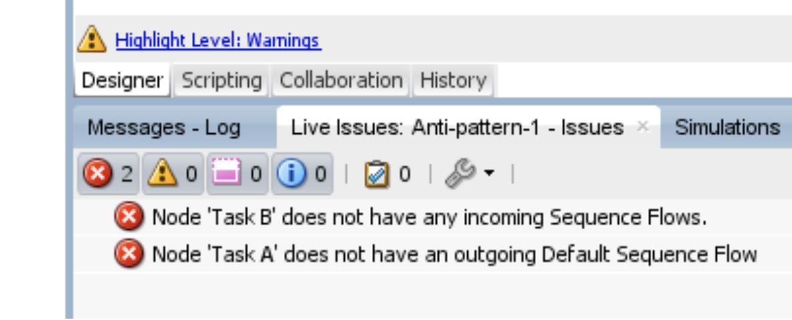

Oracle BPM#
Version: Oracle BPM Studio 12c
Perceived visual elements for problem feedback
Icons locating problems, floating problem explanation, problem list
Details#
Oracle BPM highlights the problem with an icon. When hovering the mouse on a icon, an explanation is provided (not shown below):

All the problems in the model are shown in a list:
